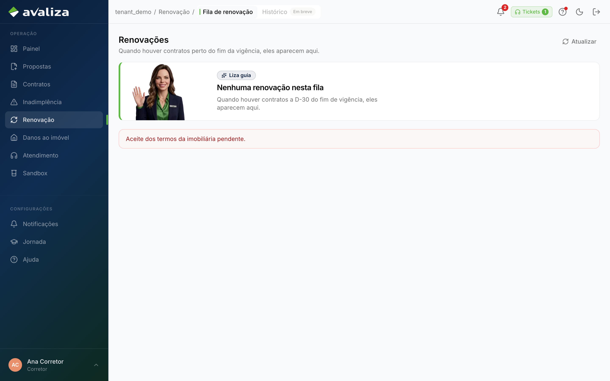

Manter o contrato · jornada independente
Fila de renovação (loja)
Dono do resultado: Imobiliária — Responsável da loja (corretor e gestor)
- Gatilho
- Contrato perto do fim de vigência aparece na sidebar Renovação.
- Resultado
- Imobiliária trata o recorte; o locatário manifesta noutro portal.
- Lifecycle
- Fila da loja. Não passa por crédito nem por IN.
- Atores na operação
- Corretor
corretor - Gestor da imobiliária
admin_imobiliaria
- Corretor
- Dono (setor)
- Imobiliária
- Outros setores
- Ninguém além do dono
Entra de
Ponto de entrada. Ninguém neste grafo é obrigado a chegar aqui.
Sem linha do tempo forçada
Este ciclo não tem etapas ordenadas. A tela abaixo é evidência, não passo 1 de N.
Telas (evidência)
Superfícies atuais onde este ciclo aparece. Abrir a tela não significa avançar uma etapa.

/renovacoes · evidência, não etapaIsto não é esta jornada
- O aceite/contraproposta do locatário é a jornada Renovação no portal.